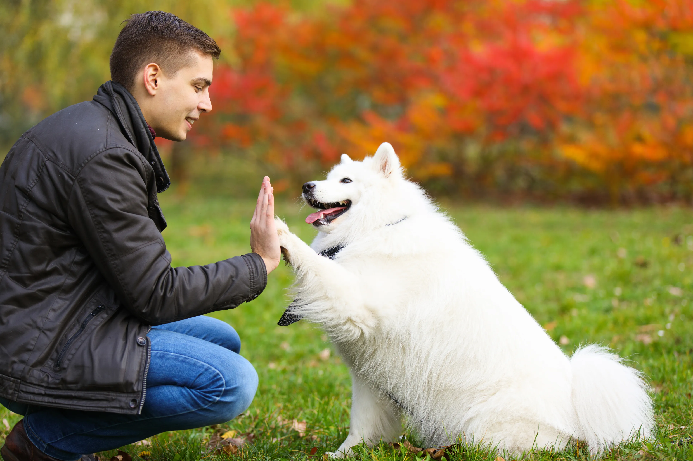
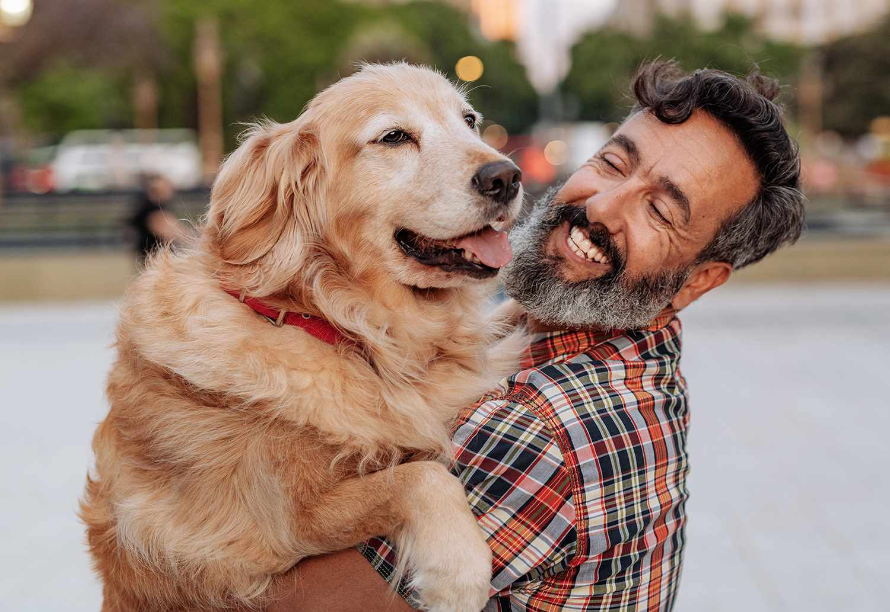

| Home | Select a Pet | Location | Grooming |
|---|
Choosing the right breed of dog is a significant decision that requires careful consideration. It's crucial to assess your lifestyle, living situation, activity level, and preferences before selecting a breed. Some breeds, like Border Collies or Australian Shepherds, thrive in active households where they can get plenty of exercise and mental stimulation. On the other hand, breeds such as Bulldogs or Basset Hounds may be better suited for a more relaxed environment with less physical activity.
Additionally, it's essential to research each breed's temperament, grooming needs, and health concerns to ensure compatibility. For instance, while some breeds are known for their friendly and outgoing nature, others may be more reserved or protective. Grooming requirements vary greatly among breeds, with some needing regular brushing and grooming sessions, while others may have minimal grooming needs. Considering these factors will help you find a breed that aligns with your lifestyle and preferences, ultimately leading to a fulfilling and harmonious relationship between you and your canine companion.
Click here to take a quiz for the best dog breed for you!  